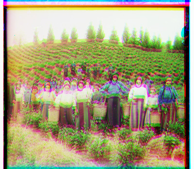
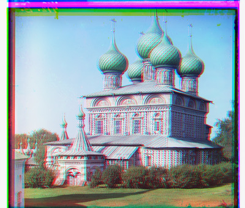

In this project, we looked at how to combine three glass plate images corresponding to applying red, blue, and green filters to create a single color image. There's a catch, however -- the three glass plate images are not perfectly aligned. We investigated how to align the images such that they can stack together and form a coherent colored image. Specifically, we aligned the red to the blue and the green to the blue.
For the historical context for this project, we took a look at images from the Prokudin-Gorskii photo collection which have been preserved by the Library of Congress.
We scanned over possible displacements of -15 to 15 along both axes. We tested each possible displacement and calculated the similarity between the displaced image (red or green) and the target (blue) using normalized cross-correlation. We use the displacement that yields the highest similarity and then align the red and green to the blue. Finally, we stack the images as color channels.
| Image |
Naive Stacking |
Displace & Align |
Displace & Align with Cropping |
| cathedral.jpg |
 |

Green displacement: (1, -1)
Red displacement: (7, 1)
|

Green displacement: (5, 2)
Red displacement: (12, 3)
|
| monastery.jpg |
 |

Green displacement: (-6, 0)
Red displacement: (9, 1) |

Green displacement: (-3, 2)
Red displacement: (3, 2) |
| tobolsk.jpg |
 |

Green displacement: (3, 2)
Red displacement: (6, 3) |

Green displacement: (3, 3)
Red displacement: (6, 3) |
| camel.jpg (my choice) |
|
Green displacement: (6, 0)
Red displacement: (7, 0) |
Green displacement: (2, 2)
Red displacement: (8, 4) |
For larger images, we used an image pyramid. We first downscaled the image and target by a factor of two and then recursively aligned the image and target. Then, we take the optimal displacement for the downscaled image and multiply it by 2 to get a reasonable displacement for the regular-scaled image. We tune on this displacement by scanning over a smaller window of possible additional displacements (from -5 to 5) to get a final displacement.
| Image |
Naive Stacking |
Displace & Align |
Displace & Align with Cropping |
| church.tif |
|
Green displacement: (0, -5)
Red displacement: (52, -6) |
Green displacement: (25, 4)
Red displacement: (58, -4) |
| emir.tif |
|
Green displacement: (-3, 7)
Red displacement: (107, 17) |
Green displacement: (49, 24)
Red displacement: (419, -198) |
| harvesters.tif |
|

Green displacement: (118, -3)
Red displacement: (120, 7) |
Green displacement: (60, 17)
Red displacement: (124, 13) |
| icon.tif |
|
Green displacement: (42, 16)
Red displacement: (89, 22) |
Green displacement: (41, 17)
Red displacement: (89, 23) |
| lady.tif |
|
Green displacement: (57, -6)
Red displacement: (123, -17) |
Green displacement: (55, 8)
Red displacement: (117, 11) |
| melons.tif |
|
Green displacement: (83, 4)
Red displacement: (176, 7) |
Green displacement: (82, 11)
Red displacement: (178, 13) |
| onion_church.tif |
|

Green displacement: (52, 22)
Red displacement: (108, 0) |
Green displacement: (51, 27)
Red displacement: (108, 36) |
| peony.tif (my choice) |
|
Green displacement: (50, 1)
Red displacement: (103, -7) |
Green displacement: (51, 3)
Red displacement: (104, -6) |
| sculpture.tif |
|
Green displacement: (33, -11)
Red displacement: (140, -26) |
Green displacement: (33, -11)
Red displacement: (140, -27) |
| self_portrait.tif |
|
Green displacement: (50, -2)
Red displacement: (130, -5) |
Green displacement: (79, 29)
Red displacement: (176, 37) |
| three_generations.tif |
|
Green displacement: (52, 5)
Red displacement: (108, 7) |
Green displacement: (53, 14)
Red displacement: (112, 11) |
| train.tif |
|
Green displacement: (111, -7)
Red displacement: (107, 1) |
Green displacement: (43, 6)
Red displacement: (87, 32) |